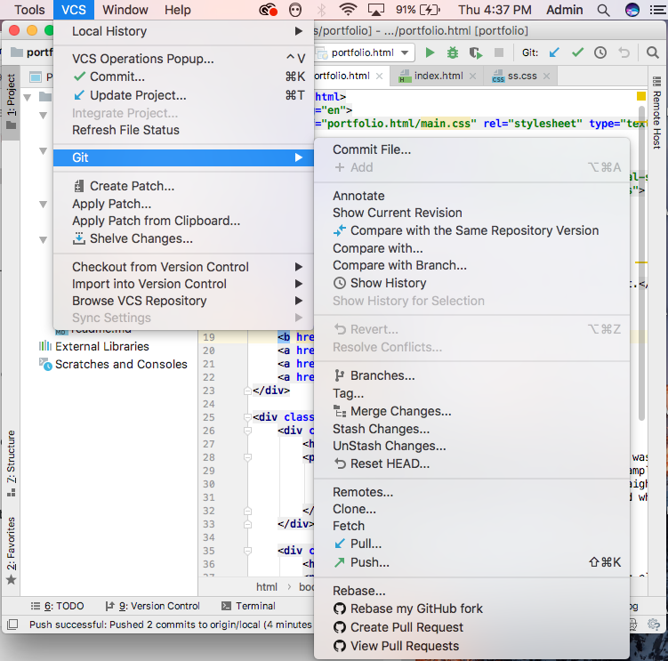
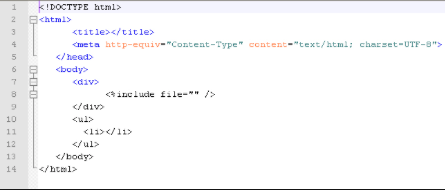
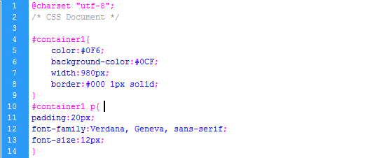

About Me
I am currently enrolled at the Arts and Sciences school of Rutgers University-Newark. I am a fifth-year senior, majoring
in Information Systems and minoring in Business Public Adminstration
Github
Git is an open-source version control system that was started by Linus Trovalds—the same person who created Linux
When developers create something (an app, for example), they make constant changes to the code, releasing new versions up to and after the first official (non-beta) release.
Version control systems keep these revisions straight, storing the modifications in a central repository. This allows developers to easily collaborate, as they can download a new version of the software, make changes, and upload the newest revision. Every developer can see these new changes, download them, and contribute.
Git is a command-line tool, but the center around which all things involving Git revolve is the hub—GitHub.com—where developers store their projects and network with like minded people.
Github through Webstorm
 WebStorm is an integrated development environment (IDE) designed specifically for modern JavaScript. The technology is lightweight yet comprehensive as it carries solutions for complex client-side development and server-side development with Node.js.
- git push - This command sends the committed changes of master branch to your remote repository.
- git pull - This command fetches and merges on the remote server to your working directory
- git commit - This command records or snapshots the file permanently in the version history
- git init - This command is used to start a new repository
- git checkout - This command is used to switch from one branch to another
- git merge - This command merges the specified branch's history into the current branch
HTML
Tags and attributes are the basis of HTML. An example of a tag is: < h1 >.
Most tags must be opened < h1 > and closed < /h1 > in order to function. These tags should be placed underneath each other at the top of every HTML page that you create:

- < !DOCTYPE html > — This tag specifies the language you will write on the page. In this case, the language is HTML 5.
- < html > — This tag signals that from here on we are going to write in HTML code.
- < head > — This is where all the metadata for the page goes — stuff mostly meant for search engines and other computer programs.
- < body > — This is where the content of the page goes.
other important tags are:
- The < img > tag has everything you need to display images on your site. The < img > tag also contains an attribute.
The attribute features information for your computer regarding the source, height, width and alt text of the image.
- < ol > and < ul > are two types of lists, ordered and unordered. The < li > tag is used to list each element. Its closing
tag, < /li >, is used to close the listed item.
- The < div > tag is nothing more than a container unit that encapsulates other page elements and divides the HTML document into sections. Web developers use < div > elements to group together HTML elements and apply CSS styles to many elements at once.
CSS
CSS stands for Cascading Style Sheets with an emphasis placed on “Style.”
While HTML is used to structure a web document (defining things like headlines and paragraphs, and allowing you to embed images, video, and other media), CSS comes through and specifies your document’s style—page layouts, colors, and fonts are all determined with CSS.
Think of HTML as the foundation, and CSS as the aesthetic choices.
CSS brings style to your web pages by interacting with HTML elements.